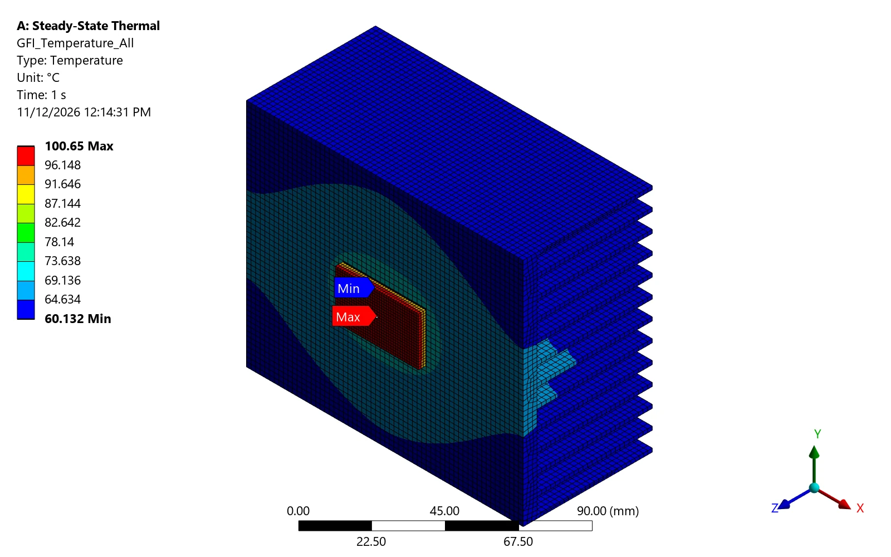
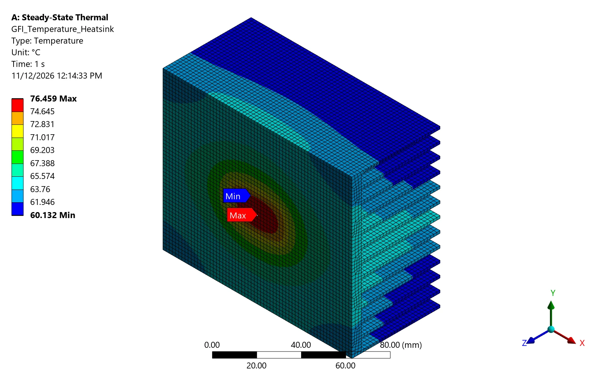
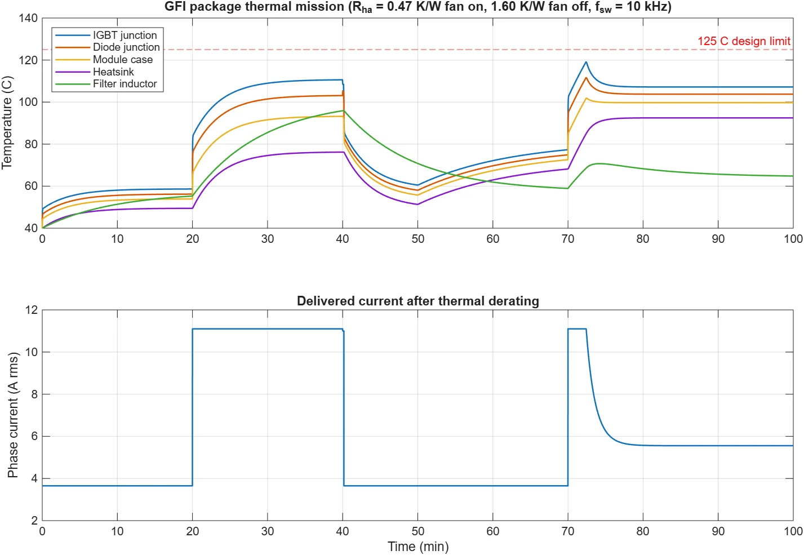

Inside the design · Station 13
Packaging and thermal
A controller on a screen does not get hot. A real one does, so after the control work I sized a roughly 1 kW unit around it: a power module, a loss and thermal model, a heatsink and fan, and an enclosure. The CAD on this page is a packaging design. Nothing was built or tested.
The hardware I picked
For the switches I chose an Infineon CIPOS Mini IKCM20L60GD, an intelligent power module (IPM) rated 600 V and 20 A, 36 × 21 mm1. It holds the six IGBTs, six diodes and their gate drivers in one package. The datasheet allows a junction temperature of 150 °C. I set a stricter design limit of 125 °C, so there is margin for everything the model leaves out1.
I switch it at 10 kHz. The reason is heat: every switching event costs a little energy, and at 16 kHz my model put the IGBT junction at 162 °C under heavy load, above the module's limit1. The simulations in the rest of this site use an average-value converter and never show this switching loss, so it only shows up in this thermal model.
The loss model and the thermal path
The thermal model is a Simscape network driven by a loss calculation2. The loss part uses datasheet values taken at 150 °C and applies them at every temperature, which is slightly pessimistic. Each IGBT loses power in two ways. Conduction loss is the voltage across it while it is on times the current through it. Switching loss is a fixed energy per switching event, scaled to the actual current and DC voltage, times the switching frequency:
Psw = (Eon + Eoff) · fsw · (Ipk/π)/Iref · Vdc/Vref
The datasheet energies are Eon = 0.61 mJ and Eoff = 0.36 mJ, measured at 300 V and 15 A, so those are Vref and Iref2. The diodes get the same treatment with their own recovery energy. At heavy load the model puts the total module loss at 77.3 W3.
That heat has to get out through a chain of thermal resistances, each in kelvin per watt. The temperature drop across one is the power through it times its resistance, just like Ohm's law with watts as the current2:
As a check on the model, the heatsink node should sit at ambient plus power times Rha: 40 + 77.3 × 0.47 ≈ 76.3 °C. The run gave 76.2 °C3.
The model also derates: above 85 °C at the heatsink it cuts the current, reaching zero at 100 °C2. That is what stops the fan-failure case from running away.
The heatsink and the fan
My first heatsink, 120 × 100 × 40 mm with a 60 mm fan, came out at 0.68 K/W by hand calculation, which was too high4. The one I kept is 120 × 100 × 56 mm with 13 fins, each 1.5 mm thick, and weighs 0.51 kg in aluminium. The fan is an 80 mm unit moving about 26 CFM4. The air between the fins is laminar (Reynolds number about 2200, heat transfer coefficient about 22 W/m²K), and the fins are 0.89 efficient4. With those, the hand calculation gave 0.39 K/W4.
Hand calculation against FEA
The hand calculation treats the heatsink base as one uniform temperature. That is not what happens. The module is only 36 × 21 mm and the base is 120 × 100 mm, so the heat enters through a small footprint and has to spread sideways before the fins can use it. The base is hottest right under the module and cooler toward the edges.
To see how much that matters I ran a steady-state thermal analysis in Ansys Mechanical. I applied 77.3 W as heat generation inside the module body, put convection at 22.1 W/m²K and 43.1 °C air on every heatsink face except the top, and meshed the model with 36,924 elements5. The heat load matched the Simscape loss exactly, which is how I knew the two models were talking about the same thing.


The base reached 76.5 °C under the module and averaged 63.8 °C, so the hot spot is about 13 K above the average5. Converted to a resistance to the 40 °C air, the average base is 0.31 K/W and the part under the module is 0.47 K/W5. The module sits on the hot part, so 0.47 is the number that matters. It is about 0.16 K/W of spreading resistance that the hand calculation left out5, and about 20 % worse than 0.39.
Results over a mission profile
With 0.47 K/W in place I reran a mission profile built from my two-inverter model (Inverter 2, the worst case)7. It runs 20 minutes at base load (3.65 A), 20 minutes at heavy load, a short fault, a return to base load, and then the fan switched off: first at base load, then at heavy load. At heavy load the inverter would be asked for 12.6 A, but the current limiter holds it to 11.1 A7.
Every phase stays under 125 °C. Heavy load leaves 14 K of margin3. With the fan failed, the junction peaks at 119.2 °C, and that is only because the derating pulls the current down to 5.56 A3. The module is protected by the derating, not by luck. The filter inductor peaks at about 96 °C3.

One limit on all of this: the model is a lumped network with datasheet values and a 40 °C cabinet temperature that I assumed. It is a design check, not a measurement.
Inside the enclosure
Everything fits in a 300 × 200 × 130 mm aluminium enclosure8. I modelled it in Fusion as GFI_Inverter_Package_v1, and the assembly has no interferences8. The layout is built around the airflow. From the bottom:
- The fan sits on the floor at one end and blows along the heatsink fins.
- The heatsink sits above it with its base plate on top. The module sits on the base plate with the thermal pad between them.
- Above the module my Fusion assembly has a 240 × 180 mm board. On it are the two DC-link capacitors, the three toroidal inductors, the three film capacitors and a terminal block. The board and the terminal block are placeholders for position and size: I did not design a PCB layout or pick a terminal.
- The control board sits above the power PCB.
In this layout the hot parts are at the bottom, in the airflow, and the control board is the part furthest from them.
The passive parts
The inductors and capacitors were sized in the control work and specified only by value. For the CAD I used the shape of a typical part of each kind, so the sizes below are the design values and the rest is representative.
The filter inductors are 2 mH toroids with a 58 mm outside diameter, about 0.15 kg and about 0.05 Ω each9. The filter capacitors are 20 µF film, one per phase1. The two DC-link capacitors are 220 µF, 450 V each1. The inductor's resistance matters thermally too: it is part of the loss model, and the model keeps the inductor peak near 96 °C3.
What is not designed here: the control board, the current and voltage sensors, the terminals and wiring. They exist in any real inverter, and I drew them as typical parts so the layout is complete. The controller algorithms are fully specified in the models. The hardware that would run them is not.
Sources for this page
- Manual V11, Step 1 (hardware selection): Infineon CIPOS Mini IKCM20L60GD, 600 V / 20 A, 36 × 21 mm; Tj max 150 °C, design limit 125 °C (
gfi_pkg_params.m); 10 kHz, and 162 °C at 16 kHz under heavy load; DC link 2 × 220 µF 450 V; filter 3 × 2 mH toroids (OD 58 mm) and 3 × 20 µF film. ↩ - Manual V11, Step 2, and
gfi_pkg_params.m/gfi_build_thermal.m: datasheet values at 150 °C (Eon 0.61 mJ, Eoff 0.36 mJ at 300 V and 15 A; Rjc 1.85 K/W IGBT and 2.85 K/W diode); pad 0.22 K/W; natural convection 1.60 K/W; derating from 85 °C to zero at 100 °C. ↩ - D1 and
mission_results.txt(run of 2026-11-13, Rha = 0.47): base 58.7 °C, heavy load 110.6 °C (diode 103.1, case 93.2, heatsink 76.2), fault 109.0 °C, fan failure plus heavy load 119.2 °C (derated to 5.56 A), inductor peak 96.0 °C, module loss 77.28 W. ↩ - Manual V11, Step 3 (hand calculation): original 120 × 100 × 40 mm with a 60 mm fan 0.68 K/W; chosen 120 × 100 × 56 mm, 13 fins × 1.5 mm, 80 mm fan (about 26 CFM), 0.39 K/W, 0.51 kg; Re about 2200, h about 22 W/m²K, fin efficiency 0.89. ↩
- Manual V11, Step 5 (Ansys Mechanical, update of 2026-11-12): h = 22.1 W/m²K at 43.1 °C, 77.3 W in the module, 36,924 elements; heatsink 60.1 / 63.8 / 76.5 °C (min / average / max); Rha 0.31 K/W average base and 0.47 K/W under the module; about 0.16 K/W spreading resistance. ↩
- Decision log D1: use the FEA heatsink resistance (0.47 K/W) in the thermal model. ↩
- Manual V11, Step 2, and the profile in
gfi_pkg_params.m, taken from the V10_fixed Inverter 2 operating points: 3.65 A base load, 12.6 A demanded at heavy load, limited to 11.1 A. ↩ - Manual V11, Step 4: Fusion assembly
GFI_Inverter_Package_v1, 300 × 200 × 130 mm aluminium enclosure, no interferences. ↩ - Brief section 8 (component sheet), and
gfi_pkg_params.m: 2 mH toroid, OD 58 mm, 0.15 kg, 0.05 Ω. ↩